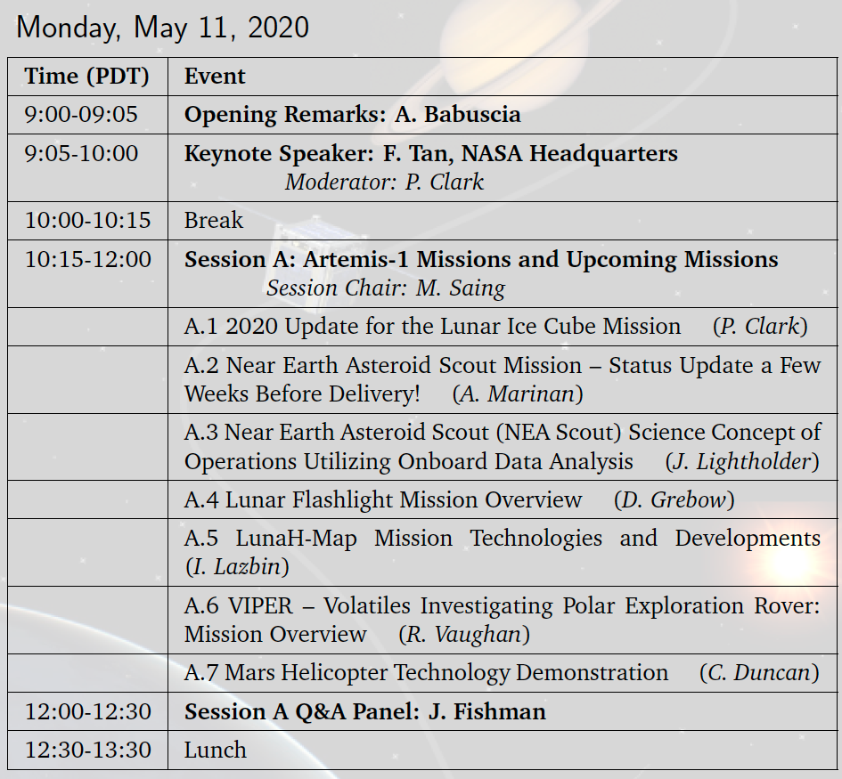
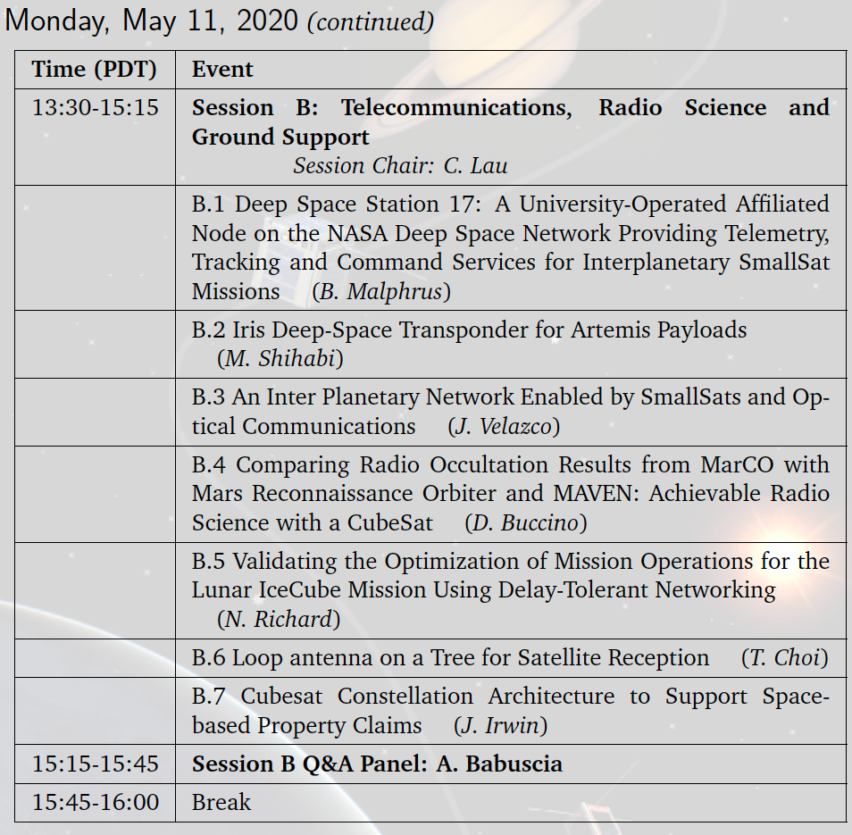
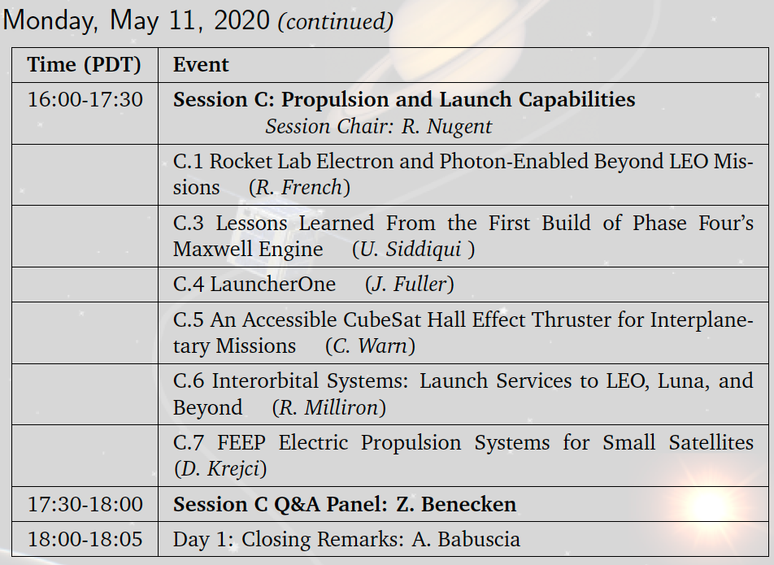
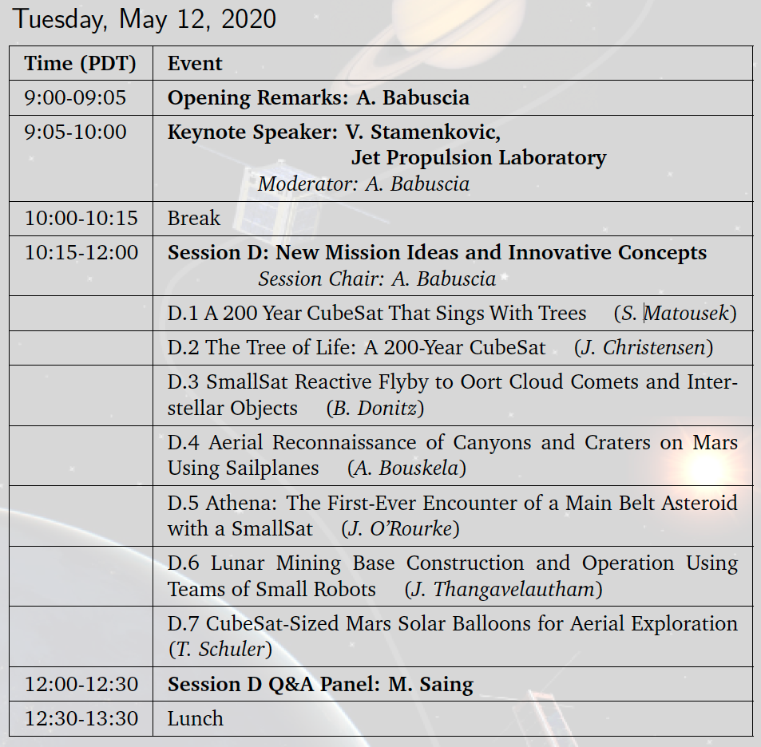

Toggle navigation
ISSC
About
Registration
Schedule
Exhibitors
Location
Committee
Contact
ISSC 2020 Poster Session
P.1 Chandra, Inflatable membrane reflectors for small satellite telescopes
P.2 is now a scheduled talk, see Session B.6
P.3 Mrozinski, NASA Cubesat and Microsat Cost Model Tool
P.4 Clark, Small Satellites for Mars Exploration
P.5 Acton, Observation Geometry for SmallSats
P.6 Hockman, Architecture Trades for Accessing Small Bodies with an Autonomous Small Spacecraft
P.7 Katti, TEST CAPABILITIES APPLIED TO SPACE RATE SENSORS FOR TACTICAL AND SPACE INERTIAL REFERENCE NAVIGATION AND SMALL SATELLITE APPLICATIONS
P.8 Bouskela, Atmospheric Flight Mechanics on Other Planets
P.9 is now a scheduled talk, see Session A.3
P.10 Ravikumar, Using Small Satellites as an Interplanetary Data Highway
ISSC 2020 Schedule




Key Dates
November 1st, Abstract submission opens.